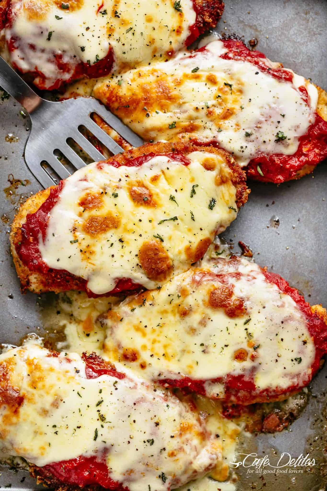

Chicken Parmesan

Description
When running out of options on what to feed your family…look no further than these crispy succulent chicken breasts with so much melty cheesy!
Ingredients
For the Chicken
- 2 large eggs
- 1 tbsp minced garlic
- 2 tbsps fresh chopped parsley
- 3 large chicken breasts, halved horizontally
- 1 cup panko breadcrumbs
- 1/2 cup fresh grated parmesan cheese
- 1 tsp garlic or onion powder
- 1/2 cup olive oil for frying
For the Sauce
- 1 tbsp olive oil
- 1 large onion, chopped
- 2 tsps minced garlic
- 14 oz tomato puree (Passata)
- 1 tsp dried Italian herbs
- 1 tsp sugar (optional)
Steps
- Preheat oven 430°F | 220°C. Lightly grease an oven tray (or baking dish) with non stick cooking oil spray; set aside.
- Whisk together eggs, garlic, parsley, salt and pepper in a shallow dish. Add chicken into the egg, rotating to evenly coat each fillet in the mixture. Cover with plastic wrap and allow to marinate for at least 15 minutes (or overnight night if time allows for a deeper flavour).
- When chicken is ready for cooking, mix bread crumbs, Parmesan cheese and garlic powder together in a separate shallow bowl. Dip chicken into the breadcrumb mixture to evenly coat.
- Heat oil in a large skillet over medium-high heat until hot and shimmering. Fry chicken until golden and crispy, (about 4-5 minutes each side).
- Place chicken on prepared baking tray / dish and top each breast with about 1/3 cup of sauce (sauce recipe below). Top each chicken breast with 2-3 slices of mozzarella cheese and about 2 tablespoons parmesan cheese. Sprinkle with basil or parsley.
- Bake for 15-20 minutes, or until cheese is bubbling and melted, and the chicken is completely cooked through.